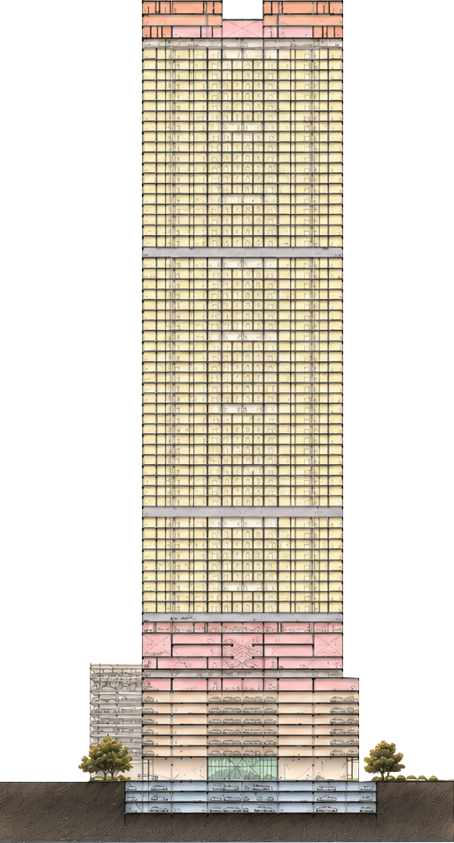

↻
Tap the Tower
←
Back

30 Habitable Floors
3.9M F/F Ht.
29 Habitable Floors
3.6M F/F Ht.
5 Amenity Lvls
9 Parking Podiums
+304.20M
Terr
+292.00M
Amen
+206.10M
Service
+101.60M
Service
+62.60M
Service
+43.00M
Service
+36.00M
+6.20M
+0.00M
L 26